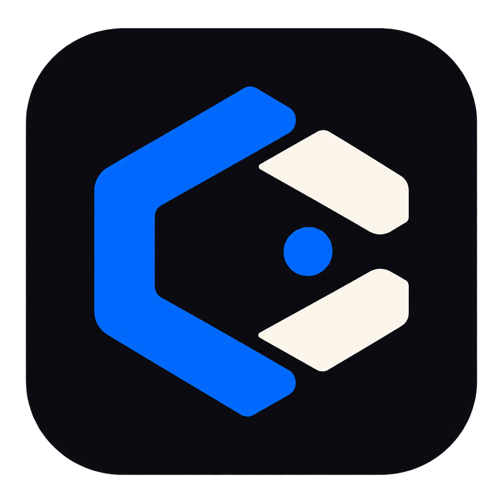

One app. Your own workspace.
Choose the folder your API keys can access. Then create a key and sign in with your own Codex account in the dashboard.
The runtime is included. No Node.js installation, terminal commands, or .env file needed.

Your local AI gateway · Created by Dhruv
Choose the folder your API keys can access. Then create a key and sign in with your own Codex account in the dashboard.
The runtime is included. No Node.js installation, terminal commands, or .env file needed.